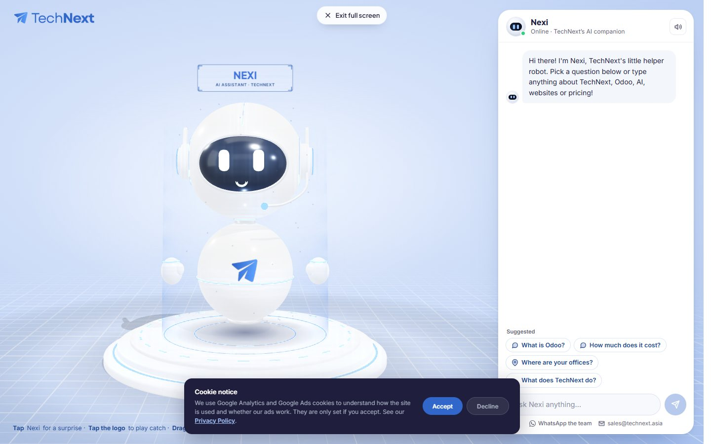
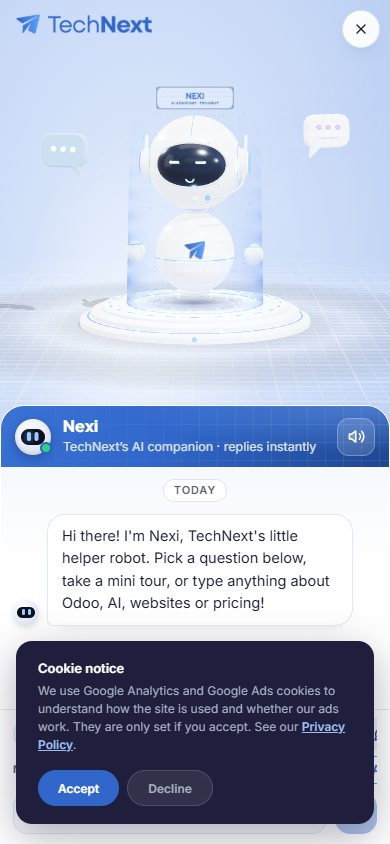

One workspace for everything behind technext.asia/nexi: how a chat flows, every answer Nexi knows, a test bench that answers exactly like the live robot, a queue of new learnings, and a 3D stage to storyboard and record Nexi animations and videos.


How every chat on /nexi#full runs, read from the live code.
tour ≥ 1.1A mini tour wins when its score is at least 1.1 and at least as high as the best topic.topic ≥ 1.1Otherwise the best topic answers when it scores 1.1 or more.site pageOtherwise Nexi links up to 3 site pages that match (“Let me look that up!”).weak ≥ 0.7A weak topic or tour match (0.7+) still answers.fallback“Hmm, I don't have an answer for that one yet” + WhatsApp and email. Every fallback is a learning to add.After each answer Nexi offers three next questions. Click a chip to jump to that topic's card. Blue chips are goals.
Every topic Nexi can answer, with keywords, reaction and follow-ups.
Ask like a visitor. Same matcher, same answers as the live Nexi.
Type a question below, or tap a starter. Nexi answers exactly as on technext.asia, and shows why.
The matcher's reasoning shows here: which rule fired, the score, and the top 5 candidates.
Real visitor-style questions with the topic each should reach. Run it before and after a learning to see it help, and to make sure nothing else broke.
| Question | Expected | Nexi gave | Score |
|---|
New keywords, topics and answers, tested here before they go live.
Learnings live in this browser. To share them, download the JSON or copy the brief, then send it to the web team (or paste it to Claude with “apply these Nexi learnings to _src/nexi/app.html”). Shipped learnings appear in the Brain after the next sync.
The real 3D Nexi from technext.asia. Try moves, build a storyboard, record a video.
Each beat: seconds, move, face, position, and the line Nexi says. Records a WebM in this browser (Chrome or Edge). For the final MP4 with music, send the JSON to the video pipeline.
When a visitor taps Nexi, one of these plays at random:
Write every new Nexi line, answer and video script to this sheet.